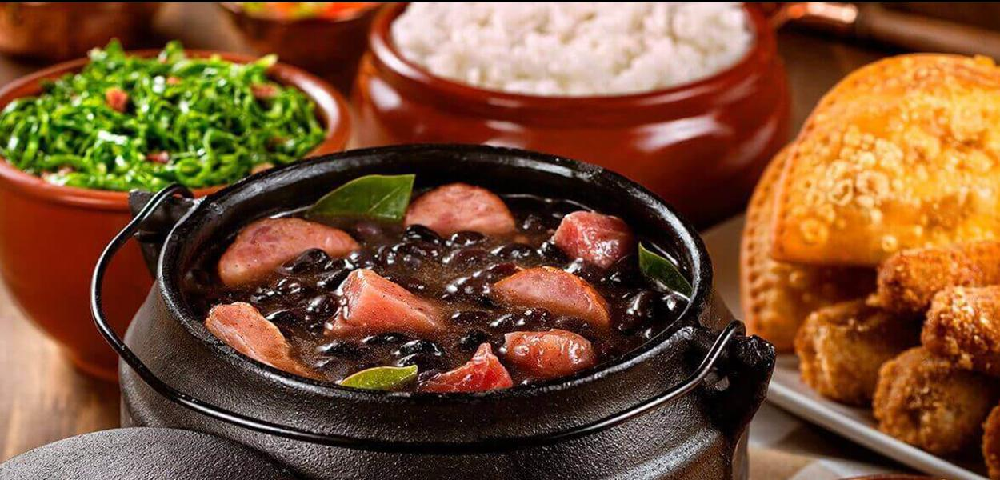
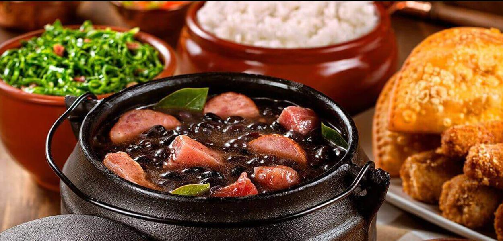

Cozinha Industrial & Restaurante

 

Preparação de refeições para empresas
O PALADAR GRILL prepara café da manhã, almoço, café da tarde e janta para sua empresa, com a participação de uma nutricionista profissional e em sua atuação atende a todas as exigências dos órgãos reguladores de suas atividades, como PAT e ANVISA.
Refeições coletivas (transportada)
As refeições coletivas são preparadas em nossas instalações e posteriormente são transportadas às instalações do cliente. Essas refeições são transportadas em panelas térmicas, essas, por sua vez, têm a capacidade de conservar a temperatura do alimento até chegar às instalações do cliente, onde são acondicionadas em balcões térmicos para iniciar a distribuição para o consumo dos clientes. Essa modalidade de serviço atende às empresas que não dispõem de espaço físico para a instalação de um restaurante. O serviço pode ser a granel (self-service porcionado), no qual os alimentos são acondicionados em balcões térmicos.
Refeições embaladas (marmitex)
Conhecidas popularmente como marmitex, as refeições embaladas são preparadas na cozinha industrial da PALADAR GRILL e entregues exatamente no horário combinado em sua empresa. Além disso, todas as refeições são colocadas em caixas isotérmicas, o que é essencial para conservar a temperatura e sabor dos alimentos, garantindo uma refeição coletiva de qualidade.
Desjejum
O PALADAR oferece aos seus clientes o serviço de desjejum. Sua composição apresenta variáveis de acordo com o perfil de cada cliente. O desjejum entra no topo do ranque como uma das principais refeições do dia. É fundamental para a manutenção de um peso saudável, pois diminui a fome nas refeições subsequentes, e diminui à vontade e procura por alimentos excessivamente calóricos, além de melhorar desenvolvimento cognitivo e mental nas suas atividades diárias e melhorar o desempenho físico.De acordo com alguns estudos, o desjejum aumenta a oferta de vitaminas e minerais como cálcio, essenciais para o bom funcionamento do organismo e prevenção de doenças como: osteoporose, diabetes tipo II e de doenças cardiovasculares.
Administração local
Administrar restaurantes nas instalações do cliente. As instalações são avaliadas pelo nosso departamento técnico e posteriormente é elaborado um projeto para eventuais adequações ou reformas para estar em conformidade com as exigências sanitárias. Nossos colaboradores estarão no local para elaborar as refeições. A equipe será formada por gerentes de restaurante, chefes de cozinha, ajudantes e copeiras. Profissionais treinados e capacitados a atender a todas as necessidades do cliente.
Campanhas
Visando à quebra da rotina e monotonia alimentar, a PALADAR GRILL oferece aos seus clientes campanhas sazonais, nas quais além de ambientar o refeitório com adereços para festa, servimos um cardápio típico:
- Carnaval
- Páscoa
- Festa junina
- Natal
- Aniversário de contrato
Cardápio participativo
O PALADAR GRILL trabalha com cardápios mensais. Estes são enviados ao cliente para apreciação, com 15 dias de antecedência. Caso haja pratos de pouca aceitação dentre os comensais, o cliente poderá fazer algumas alterações, sendo assessorado por nossa nutricionista.
Aniversariantes do mês
Todo mês serviremos bolo em homenagem aos aniversariantes.
Diferenciais dos serviços da PALADAR GRILL
Ao contratar os serviços de refeições coletivas da Paladar Grill você estará garantindo inúmeras vantagens, tanto para seus funcionários como para sua empresa. Veja alguns dos benefícios que certamente irão fazer a diferença no seu dia a dia:
- Estrutura:
- A cozinha industrial da PALADAR GRILL possui Alvará de Funcionamento e é totalmente equipada e regulamentada de acordo com os altos padrões e normas exigidas pelos órgãos fiscais, PAT (Programa de Alimentação do Trabalhador) e ANVISA (Agência Nacional de Vigilância Sanitária).
- Mão de obra:
- O PALADAR GRILL conta com profissionais especializados e experientes, que estão em constante treinamento. Podendo oferecer refeições de altíssima qualidade.
- Preparo:
- As refeições coletivas são preparadas, transportadas e entregues com total cuidado, a fim de evitar qualquer problema com a qualidade da refeição. Para isso, a empresa segue as boas práticas definidas pelos órgãos fiscais para a higiene, armazenamento, conservação e preparo dos alimentos.
- Sabor:
- A Paladar Grill só utiliza ingredientes selecionados, o que garante um sabor inconfundível em todos os pratos dos cardápios.
- Saúde:
- As refeições são balanceadas e preparadas com o aval de nutricionista certificado e experiente. Com isso, além do sabor, nossos pratos atendem às normas indicadas para uma melhor dieta. Agende sua visita, teremos o maior prazer em recebê-los! Clique aqui